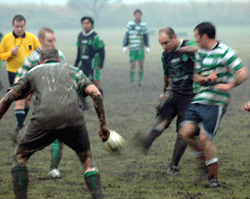
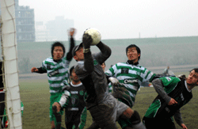
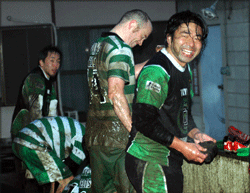

|
Misato, Sun 19th Nov. 2 trips out to Misato in 2 weeks was somewhat of a shock for the travel weary Hibs, particularly as conditions were against our style of football each time. Last week it was Hurrican winds of “Cyclone Sala” which went against us and this week it was torrential rain for this tough fixture against the Celts. As the last fixture of the day we braved the worst of the conditions and with the pitch so waterlogged and the rain relentless; if not for the absent of some hooded teens selling hubcaps we could have been forgiven for thinking we were playing on a Sunday morning in Dagenham. East London. The Celts had strong Irish contingent with a Gaellic football background, enough for them to be considered “mudlarks” to borrow a horse racing term.
Despite the mudbath both teams tried to play the beautiful game, with the quality of play being quite high. The flanks were the driest part of the field and both teams looked dangerous when attacking out wide. The first goal game 10 minutes in as Kuni K found himself in space wide on the right inside the box and we cracked an unstoppable shot back post that hit the net rising. A great finish.
The Celts were not without chances themselves and some lax marking out wide saw the Celts wide left midfielder free on goal and he beat Hitoshi well to even the scores. Hitoshi was also called upon to make a few desperate saves one from a free kick that caught him wrong footed and a few goal mouth scrambles where he had to dive on the ball. After a corner the Celts cleared out, but one remained who played Tomo on-side and the TML leading goal scorer shook off his jet lag after his 2 day trek from Kanagawa, and made no mistake, squeezing it underneath the keeper from close range. News has just come in that with his goal scoring exploits and recent heavy use of the Saikyo line, Tomo has been offered JR platinum frequent flyer status. The last 20 minutes of the first half was the Hibs best period of the game and we should have gone into half time with 3 or 4 on the board. Yama was denied a seemingly clear goal from a very questionable offside flag and some players were guilty of not taking chances.
2-1 into half time and the Celts began the second half with clear intent. There were several chances at either end and the Celts hit the post once and the ball slipped by the back post a few times. Bevan and Yohei combined to release Keita on the right and he skidded in a powerful cross that a Celts defender flung a leg at only to see it go into his own net. Not fair on the defender who had battled valiantly all game, but a deserved reward for Keita, who I thought was close to the best on field. The Celts struck back again with their left midfielder, who was one of the the other contenders for MOTM, beating a man and lifting it over Hitoshi to make it 3-2 with a minute to go. The Hibs held on to seal the victory, the result was probably fair as we’d had 2 or 3 penalty’s that were about 70% in favour of being given turned down and had several more chances on goal.
The match was played in a good spirit and both teams enjoyed reliving our youths with a muddy surface that enabled 5 metre slides into tackles. This was a day when all the Hibs played well and despite not a dominating scoreline we’re more than happy to bag 3 points soak our kit for a few days and move along to the next fixture.
.
Report by Bevan Colless
|